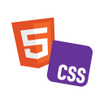
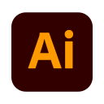

From the classroom to web design: My journey and skills
From education and digital learning to media computing, here's a look at my career so far, the ways I work and my experiences with web design, e-commerce and digital tools.
First State Examination for teaching at lower secondary schools
Focus & involvement
STEM & subject didactics: Project-based teaching of analytical and scientific fundamentals, alongside modern physical education.
Academic training: A solid grounding in education, developmental psychology, subject didactics and lesson planning.
Student sports committee: Active member, helping shape student life, organise sports events and connect students with lecturers.
02
– |
Teacher induction and school-based training
Teacher induction and school-based training
Institutions
Teacher Training Seminar Schwäbisch Gmünd / Kastell-Realschule Welzheim
Subjects
Mathematics, Physics, Physical Education
Qualification
Second State Examination for teaching at lower secondary schools
Focus & practical experience
Independent teaching: Planning, teaching and reflecting on lessons across year groups 5–10.
Lesson design: Creating practical lessons that connect subject matter to everyday life and current teaching methods.
Working with students and families: Parent meetings, assessment and grading, school conferences and exam preparation.
School life: Getting involved at Kastell-Realschule, supporting sports events and contributing to school projects.
03
– |
Secondary school teacher & digital learning coordinator
Secondary school teacher & digital learning coordinator
Institution
Realschule Plus am Alten Schloß
Role
Taught Mathematics, Physics and Physical Education to years 5–10, with a focus on bringing digital tools into everyday school life.
Digital learning & responsibilities
Learning platform administration: Set up, configured and managed the school's iServ platform, including users, permissions and maintenance.
Mobile device management (MDM): Set up and organised the school's iPad infrastructure and managed it technically.
Digital learning coordination: Looked after digital media, supported teachers and students with technical issues, and helped put digital teaching ideas into practice.
Leadership & responsibility
Student council advisor (2020/2021): Supported the student council, organised projects and helped communication between students, teachers and school leadership.
04
– present |
B.Sc. in Media Computing
B.Sc. in Media Computing
Institution
IU International University of Applied Sciences
Degree programme
Media Computing
Study format
Part-time distance learning
Degree sought
Bachelor of Science
Focus & skills
Web development & programming: A solid grounding in HTML5, CSS3, JavaScript and modern software architecture.
UX/UI design & prototyping: Designing user-friendly interfaces with a focus on usability, user experience and accessibility.
Computer science fundamentals: Databases, object-oriented programming, software engineering and the Internet of Things.
05
– present |
Web development & e-commerce management
Web development & e-commerce management
Company
Independent Racing, Dalstorp, Sweden
Role
Looking after the WooCommerce shop end to end and helping modernise its technical setup.
Employment
Full-time
Focus & responsibilities
Shop relaunch & improvements: Building, maintaining and continuously improving a WordPress and WooCommerce shop.
Product configurator: Integrating and maintaining an interactive live configurator for custom graphics.
Web design & UX: Creating custom layouts and graphic banners, and improving the mobile experience with responsive design.
Product data & content: Organising products, variants and categories, and keeping shop content up to date.
Shop management: Monitoring and improving shop performance, including SEO and marketing integrations.
Tools & technology
My toolkit for web, design & e-commerce
Web technologies

HTML5 & CSS3
Semantic code, responsive web design and accessibility
CMS
WordPress
Content management, custom taxonomies and content updates
E-commerce
WooCommerce
Shop setup, product templates and variants, live configurators
Page builder
Elementor
Visual page building, custom layouts and templating
Design & UI
Figma
UI/UX prototyping, wireframes and layout concepts
Image editing
Adobe Photoshop
Image optimisation basics, cut-outs and web graphics
Vector graphics

Adobe Illustrator
Vector editing basics, icon and logo adjustments
School server / LMS
iServ
Server, permissions and user management
Skills & strengths
More than code: what I bring to a project
Web design
E-commerce & shop management
End-to-end shop management and product configurator integrations
Web development
UX/UI design & accessibility (WCAG)
User-friendly interfaces, usability and accessible websites
Teaching
Making complex topics clear
Breaking down complex subjects into clear explanations, guides and support
Management
Project & event organisation
Taking ownership and organising school and student committee projects
People skills
Communication & collaboration
Connecting technical teams with the people who use their work, including teachers, students and customers
Processes
Digital tools & better workflows
Introducing digital tools, organising processes and making workflows more efficient